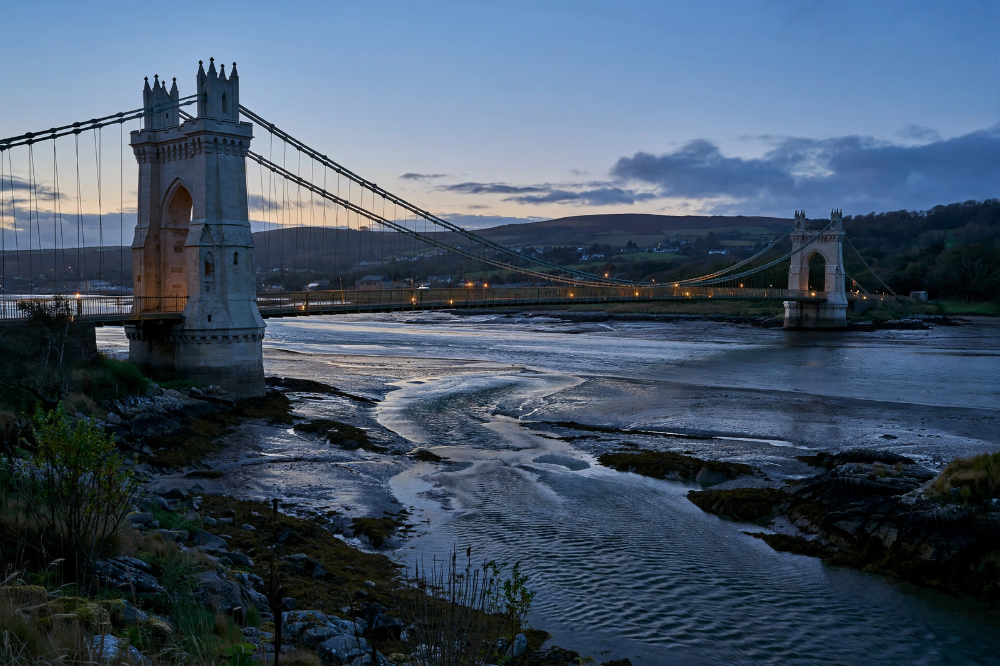

| Menai Strait | |
|---|---|
 | |
| Location | North Wales, between Anglesey and Gwynedd |
| Length | 25 km (16 mi) |
| Width | 400 m – 7.5 km (narrowest to widest) |
| Bridges | Menai Suspension Bridge; Britannia Bridge |
The Menai Strait (Welsh: Afon Menai, "river Menai") is a narrow stretch of shallow tidal water about 25 km (16 mi) long, which separates the island of Anglesey from the mainland of Wales. It varies in width from 400 metres (1,300 ft) between Fort Belan and Abermenai Point to 7.5 kilometres (4.7 mi) between Puffin Island (Ynys Seiriol) and Penmaenmawr. The differential tides at the two ends of the strait cause very strong currents to flow in both directions through the strait at different times, creating dangerous conditions.
The strait follows a fault line and was scoured deeper by glacial meltwater at the end of the last ice age. One of the most dangerous stretches is the Swellies (Pwll Ceris), between the two bridges, where rocks near the surface cause overfalls and local whirlpools. Charles Dickens and others wrote of its hazards to shipping; in 1854 the clipper Royal Charter-era wrecks were part of a long history of losses, and the training ship HMS Conway was wrecked in the Swellies in 1953.
The strait is spanned by two bridges: Thomas Telford's Menai Suspension Bridge (1826), built as part of the London–Holyhead road, and Robert Stephenson's Britannia Bridge (1850), originally a railway tubular bridge, rebuilt after a fire in 1970 and now carrying both rail and the A55 road. On the Anglesey shore stands the town of Menai Bridge (Porthaethwy), and on the mainland shore the city of Bangor and its pier, one of the longest in Wales.
The strait's strong currents and varied habitats support rich marine life, and much of it is designated for nature conservation. The Marine Centre Wales research facilities of Bangor University's School of Ocean Sciences are located at Menai Bridge.